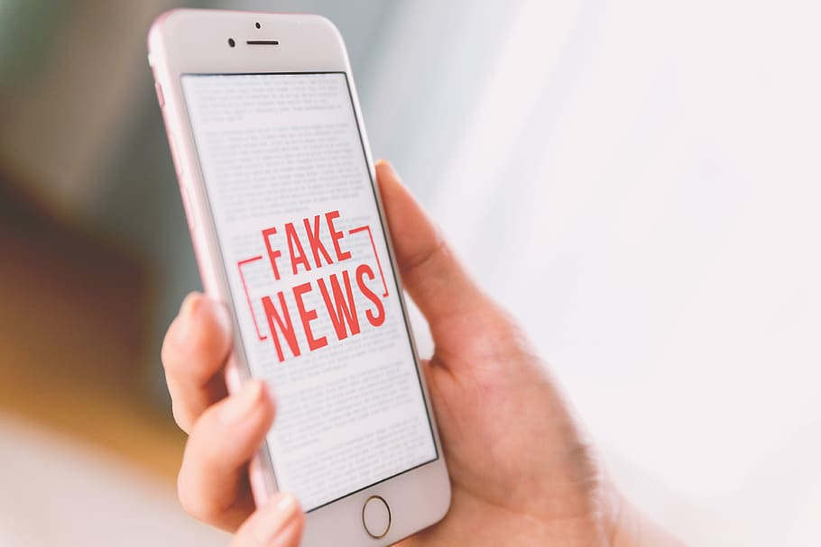

O que são Fake News?
"Fake News são notícias falsas publicadas por veículos de comunicação como se fossem informações reais. Esse tipo de texto, em sua maior parte, é feito e divulgado com o objetivo de legitimar um ponto de vista ou prejudicar uma pessoa ou grupo (geralmente figuras públicas).
As Fake News têm um grande poder viral, isto é, espalham-se rapidamente. As informações falsas apelam para o emocional do leitor/espectador, fazendo com que as pessoas consumam o material “noticioso” sem confirmar se é verdade seu conteúdo."
Como Combater as Fake News?
Não compartilhar caso tenha dúvida se o conteúdo é verdadeiro, denunciar e enviar as mensagens para grupos de verificação como o Fato ou Fake estão entre as dicas de especialistas não disseminar mentiras.
As principais dicas dos especialistas para ajudar a combater fake news estão as seguintes:
As principais dicas dos especialistas para ajudar a combater fake news estão as seguintes:
- Verificar se as mensagens que você recebe nas redes sociais são verdadeiras.
- Não compartilhar os conteúdos caso você tenha dúvida se eles são verdadeiros.
- Encaminhar a mensagem falsa para grupos de verificação de fatos, como o Fato ou Fake.
- Denunciar as mensagens falsas em sites e plataformas de redes sociais.
